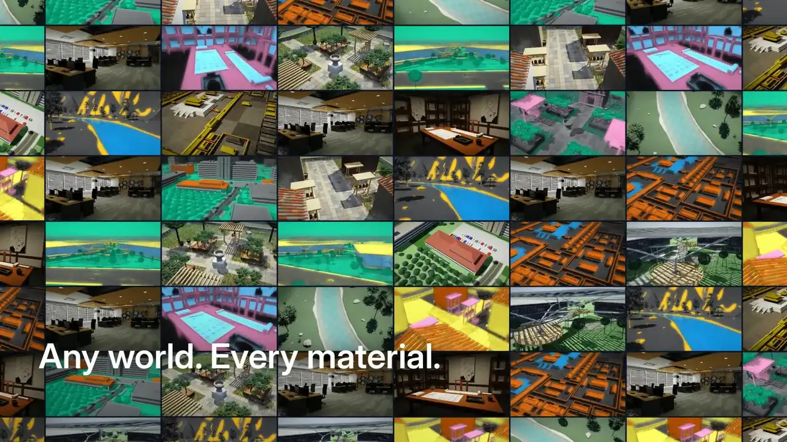

SWR-Bench worlds
SWR-Bench: eight indoor and outdoor worlds with measured spectra, rendered with 64 bands from 420 to 980 nm together with material labels and area proportions.
Abstract
Surfaces with similar RGB colours can have distinct material spectra. Multi-view hyperspectral imaging offers the evidence to distinguish them and associate their materials with 3D surfaces. Existing 3D unmixing approaches, however, either decompose rendered images after compositing or rely on slow implicit fields. A faithful reconstruction alone does not establish whether its components correspond to materials; this requires multi-view data of known composition. We present Spectral World Renderer (SWR), a framework for world generation and 3D unmixing. A coding agent builds executable worlds with measured material spectra; shared camera samples yield aligned hyperspectral images, material labels and sub-pixel proportions. The resulting SWR-Bench contains eight indoor and outdoor worlds. SWR decodes compact Gaussian features into material abundances before compositing, jointly rendering spectra and material maps. Multi-view appearance regularization discourages distinct appearances from collapsing onto shared endmembers. Fitting uses no material labels; validation labels select the endmember count. SWR achieves the highest mIoU in all eight worlds and the highest mean PSNR on each real dataset evaluated. On City, it trains 3.7–12.9× faster than the unmixing baselines; its optimized renderer averages 34.9 labelled views/s. The fitted primitives support cross-view spectral queries that distinguish surfaces with similar RGB colours.
Video

Playing the video loads it from YouTube (privacy-enhanced mode).
Pipeline
SWR world generator: worlds with known composition
Real multi-view hyperspectral datasets are tabletop or turntable captures without material labels or sub-pixel proportions, which cannot be annotated reliably by hand. The SWR world generator therefore creates worlds rather than annotating captures.
Generate the world
A coding agent turns reference images and text into an executable scene program that fixes geometry, materials, illumination and cameras.
Ground it in measurements
Every material is assigned measured spectra, with specimen variation and changes in spectral shape between sunlight and shade.
Render aligned evidence
Shared sub-pixel samples render RGB and hyperspectral observations together with material labels and area proportions.
SWR: unmixing inside rendering
Unmixing a rendered image afterwards acts on spectra that compositing has already mixed across surfaces. SWR instead unmixes inside rendering: at every ray intersection, a shared decoder turns the local feature into abundances and an intensity, and compositing accumulates both, so one render yields spectra and abundances. One Gaussian representation, composited with one set of visibility weights, renders spectra, abundances and material queries at any band count.
Band-independent storage
An RGB-trained anchor provides compact geometry, and each Gaussian stores a feature instead of a spectrum, so storage does not grow with the number of bands.
Decode before compositing
A shared decoder maps the feature at every ray intersection to abundances over a scene-wide endmember dictionary, so one render yields spectra and abundances and every Gaussian carries queryable abundances.
Intensity and appearance regularization
A separate intensity absorbs shading, and a multi-view appearance regularization assigns an over-complete set of endmembers to distinct appearances.
Multi-view appearance regularization
Because the intensity absorbs brightness, a single endmember can explain two spectrally similar materials: in Forbidden City, white marble is four times brighter than grey masonry but only 3.8° apart in spectral shape.
Clustering the pixels of all training views by spectral shape and brightness separates such appearances, and every view shares the same clusters. Each cluster initializes its own endmember, and the assignment is retained as a weak regularizer during training, which gives marble its own layer.
Simulated hyperspectral observations
Results
Material queries
Every Gaussian carries abundances and a spectrum, so a query is a selection over primitives, consistent across views. Pick a world below, choose a query and drag the divider to compare the RGB rendering (left) with the result (right).
- Name a material, e.g. fired clay or water
- Combination of names, e.g. stone ∨ travertine
- Click a shaded pixel: the sunlit parts of the same material are retrieved too
- Spectrum from a library, e.g. a living leaf
- Band or spectral index, e.g. near-infrared
Try different query modes and worlds.
Abundances come from SWR models trained without material labels. A name query sums the abundances of the endmembers assigned to the class through a frozen training-view map, on a fixed 0–1 scale, and a combination sums two classes. Click, spectrum and index queries compare the spectrum of every Gaussian with the clicked spectrum, a library reflectance or a band index under a fixed threshold. These clips are illustrative; quantitative results are reported below and in the paper.
Seeing beyond RGB
Living leaves differ from materials of the same colour beyond the visible range: chlorophyll absorbs red light and leaf tissue reflects near-infrared light, producing a red edge near 700 nm that minerals and dry leaves lack. In City, foliage-coloured mineral leaves are only 2° from foliage in RGB but 42° apart in spectrum, so they receive endmembers of their own.
Because abundances are stored on explicit, rasterizable Gaussians, a material query is a selection over primitives that is consistent across views and requires neither labels nor a per-image classifier. The mineral-leaf query retrieves no ordinary tree, whereas the equivalent RGB query retrieves eleven.
A measured spectrum can also serve as the query. With the sun and sky illumination factored out, a pixel clicked in shadow retrieves 77 % of the sunlit part of its material, against 10 % for an RGB colour query (mean over four outdoor worlds), in about 3 ms per query.
Material identification and spectral fidelity on SWR-Bench
SWR has the best mIoU in every world and learns the endmembers closest to the true spectra. Known composition exposes what fidelity hides: in Market and Study, 3DGS with post-hoc unmixing reaches a lower SAM but a far lower mIoU. Within SWR itself, decoding after compositing raises Market PSNR from 33.72 to 34.37 dB yet lowers mIoU from 0.47 to 0.37, the same gap.
| World | UnMix-NeRF | 3DGS + VCA / NNLS | SWR |
|---|
Efficiency
The City pipeline covers all four stages, from RGB anchor to decoder. Throughput counts views per second with spectra and label maps at 960 × 540 × 64.
SWR uses an optimized fused fp16 decoder that skips hits with weight below 10−4 (99.97 % identical labels); baselines use their reference code. Throughput is the mean over Market, Botanical, Study and Karst.
Real captures
Without material ground truth, real captures test spectral fidelity. SWR has the best mean PSNR on each real source; on HS-NeRF, 3DGS reaches a lower mean and 95th-percentile angle.
| Source | PSNR ↑ baseline · ours | SAM ↓ baseline · ours |
|---|---|---|
| NeSpoF21 bands · HyperGS | 28.36 · 29.39 | 4.58 · 3.86 |
| HSI-SC apple204 bands · HyperGS | 27.95 · 30.67 | 1.64 · 1.35 |
| HS-NeRF128 / 141 bands · 3DGS | 26.32 · 26.51 | 5.71 · 5.97 |
Analysis
Primitives as material carriers
Each Gaussian is enclosed by the regular tetrahedron of its canonical frame, scaled, rotated and translated with the Gaussian. The clips dissolve from these bounding tetrahedra into the rendered view along the camera path of the material queries.
Citation
@misc{lee2026swr,
title = {Spectral World Renderer: Unified 3D Hyperspectral Unmixing},
author = {Lee, Chia-Ming and Hsiao, Yu-Jou and Chang, Ming-Ching and
Li, Xin and Liu, Yu-Lun and Hsu, Chih-Chung},
year = {2026},
eprint = {2610.19520},
archivePrefix = {arXiv},
primaryClass = {cs.CV},
url = {https://arxiv.org/abs/2610.19520}
}
Acknowledgements
To be added.